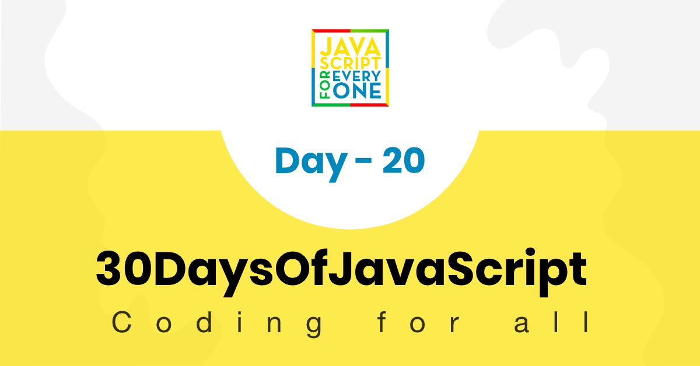

A JavaScript style guide is a set of standards that tells how JavaScript code should be written and organized. In this section, we will talk about JavaScript guides and how to write a clean code.
JavaScript is a programming language and like human language it has syntax. The syntax of JavaScript has to be written following a certain style guideline for sake of convince and simplicity.
You have been coding alone for so long but now it seems to work in a team. It does not matter in anyway you write you code as long as it running, however when you work in team of 10 or 20 or more developer on one project and on the same code base, the code will be messy and hard to manage if there is no any guidelines to follow.
You can develop your own guidelines and conventions or you can also adapt well developed guidelines. Let us the most common know guidelines. Most common JavaScript Style Guides
Airbnb has one of the most popular JavaScript style guides on the internet. It covers nearly every aspect of JavaScript as well and it is adopted by many developer and companies. You may checkout the Airbnb style guide. I would also recommend to try it. Their style is very easy to use and simple to understand.
This is guideline is not as popular as Airbnb but it worth to look at it. They removed the semicolon in their style guide.
I do not say much about Googles guideline and I did not use rather I would suggest you to have a look from this link.
In this challenge also we used the general JavaScript coding writing conventions and guides. Coding conventions are style guidelines for programming which are developed by an individual, a team or a company.
Coding conventions helps:
Coding conventions includes
In this challenge we follow the regular JavaScript convention but I added also my preference of writing.
let firstName = 'Asabeneh'
let lastName = 'Yetayeh'
let country = 'Finland'
let city = 'Helsinki'
const PI = Math.PI
const gravity = 9.81
We chose to make array names plural
// arrays
const names = ['Asabeneh', 'Mathias', 'Elias', 'Brook']
const numbers = [0, 3.14, 9.81, 37, 98.6, 100]
const countries = ['Finland', 'Denmark', 'Sweden', 'Norway', 'Iceland']
const languages = ['Amharic', 'Arabic', 'English', 'French', 'Spanish']
const skills = ['HTML', 'CSS', 'JavaScript', 'React', 'Python']
const fruits = ['banana', 'orange', 'mango', 'lemon']
const vegetables = ['Tomato', 'Potato', 'Cabbage', 'Onion', 'Carrot']
By now you are very familiar function declaration, expression function, arrow function and anonymous function. In this challenge we tend to use arrow function instead of other functions. Arrow function is not a replacement for other functions. In addition, arrow functions and function declarations are not exactly the same. So you should know when to use and when not. I will cover the difference in detail in other sections. We will use explicit return instead of implicit return if the function is one liner
// function which return full name of a person
const printFullName = (firstName, lastName) => firstName + ' ' + lastName
// function which calculates a square of a number
const square = (n) => n * n
// a function which generate random hexa colors
const hexaColor = () => {
const str = '0123456789abcdef'
let hexa = '#'
let index
for (let i = 0; i < 6; i++) {
index = Math.floor(Math.random() * str.length)
hexa += str[index]
}
return hexa
}
// a function which shows date and time
const showDateTime = () => {
const now = new Date()
const year = now.getFullYear()
const month = now.getMonth() + 1
const date = now.getDate()
let hours = now.getHours()
let minutes = now.getMinutes()
if (hours < 10) {
hours = '0' + hours
}
if (minutes < 10) {
minutes = '0' + minutes
}
const dateMonthYear = date + '.' + month + '.' + year
const time = hours + ':' + minutes
const fullTime = dateMonthYear + ' ' + time
return fullTime
}
The new Dat().toLocaleString() can also be used to display current date time. The toLocaleString() methods takes different arguments. You may learn more about date and time from this link.
We coverer many types of loops in this challenges. The regular for loop, while loop, do while loop, for of loop, forEach loop and for in loop. Lets see how we use them:
for (let i = 0; i < n; i++){
console.log()
}
// declaring an array variable
const names = ['Asabeneh', 'Mathias', 'Elias', 'Brook']
// iterating an array using regular for loop
let len = names.length;
for(let i = 0; i < len; i++){
console.log(names[i].toUpperCase())
}
// iterating an array using for of
for( const name of names) {
console.log(name.toUpperCase())
}
// iterating array using forEach
names.forEach((name) => name.toUpperCase())
const person = {
firstName: 'Asabeneh',
lastName: 'Yetayeh',
age: 250,
country: 'Finland',
city: 'Helsinki',
skills: ['HTML','CSS','JavaScript','React','Node','MongoDB','Python','D3.js'],
isMarried: true
}
for(const key in person) {
console.log(key)
}
We declare object literal with const.
// declaring object literal
const person = {
firstName: 'Asabeneh',
lastName: 'Yetayeh',
age: 250,
country: 'Finland',
city: 'Helsinki',
skills: ['HTML','CSS','JavaScript','TypeScript', 'React','Node','MongoDB','Python','D3.js'],
isMarried: true
}
// iterating through object keys
for(const key in person) {
console.log(key, person[key])
}
We say if, if else, if else if else, switch and ternary operators in previous challenges.
// syntax
if (condition) {
// this part of code run for truthy condition
} else {
// this part of code run for false condition
}
// if else
let num = 3
if (num > 0) {
console.log(`${num} is a positive number`)
} else {
console.log(`${num} is a negative number`)
}
// 3 is a positive number
// if else if else if else
let a = 0
if (a > 0) {
console.log(`${a} is a positive number`)
} else if (a < 0) {
console.log(`${a} is a negative number`)
} else if (a == 0) {
console.log(`${a} is zero`)
} else {
console.log(`${a} is not a number`)
}
// Switch More Examples
let dayUserInput = prompt('What day is today ?')
let day = dayUserInput.toLowerCase()
switch (day) {
case 'monday':
console.log('Today is Monday')
break
case 'tuesday':
console.log('Today is Tuesday')
break
case 'wednesday':
console.log('Today is Wednesday')
break
case 'thursday':
console.log('Today is Thursday')
break
case 'friday':
console.log('Today is Friday')
break
case 'saturday':
console.log('Today is Saturday')
break
case 'sunday':
console.log('Today is Sunday')
break
default:
console.log('It is not a week day.')
}
// ternary
let isRaining = true
isRaining
? console.log('You need a rain coat.')
: console.log('No need for a rain coat.')
We declare class with CamelCase which starts with capital letter.
// syntax
class ClassName {
// code goes here
}
// defining class
class Person {
constructor(firstName, lastName) {
console.log(this) // Check the output from here
this.firstName = firstName
this.lastName = lastName
}
}
Whatever style guide you follow be consistent. Follow some programming paradigms and design patterns. Remember, if you do not write you code in certain order or fashion it will be hard to read your code. So, do a favor for yourself or for someone who is going to read your code by writing readable code.
🌕 You are tidy. Now, you knew how to write clean code, so anyone who know the English language can understand your code. You are always progressing and you are a head of 20 steps to your way to greatness.
🎉 CONGRATULATIONS ! 🎉